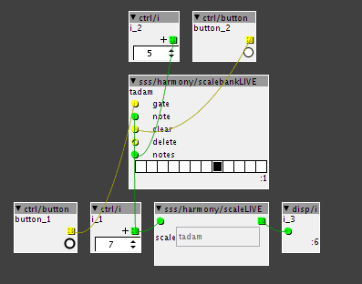

if I were you, I'ld just use the factory sample&hold module... then you can just use this together with any oscillator you want.
I added the functionality to an oscillator a couple of times, but in the end I always removed it and made the S&H external..
Also an anti-alliased PWM-pulse can be made using the S&H (oscillator&slider into comparator at audio rate, whenever it changes value->hold)
Module requests
SirSickSik
#162
SirSickSik
#163
well, finally starting to get a more or less complete loading system:
At the moment I've got 3 sample-loading systems/modules which can be used together.
They can be put one after another and load their samples to a single table or each to their own table (eg. basskicks,snares, hihats each get their own tables), so it's up to you to decide how you handle your samples.
-select by name:
use directories&names to load 8 samples in a row. Useful in case you want to load a specific set of samples from different folders and/or different names.
-select by ordered indexnumber:
using the same prefix, this loads a set of samples in consecutive indexnumbers, eg.
drum001 up to drum008, useful to load preset drumskits where you've made sure that the index numbers relate to drum-types, eg. basskick is dr001,dr009,dr017. snare is dr002,dr010,dr018, etc.
-random selection of samples within a range of indexnumbers:
using the same prefix, but random indexnumbers, you set the lowest index number and range for the index that could be randomly selected. Currently this index goes from 000 up to 999, so you could randomly combine samples from a set of 1000 samples.
As for the sample playing, I've made 3 different modules:
-a complex sampler with start, loopstart,loopend and end positions, reverse, repeat on/off (using loop positions and only for sample 2, but sample selection for 1 and 2 can be swapped with a gate-input), 2 samples with an tiltable envelope to mix between them and of course individual pitch control for both samples.
-a simple multi sampler to trigger 4 different samples, each with their own pitch-control, sample-select and gate inputs.
-wavetable-oscillator with zero-crossing detection that can use the sounds to create weird bass/glitch sounds. Sounds are created by setting sample-index, start-position within sample and amount of zero-crossings in the loop.
SirSickSik
#165
a per-sample volume-control shouldn't be too hard to do yourself as you could just save (an) extra table(s) containing control values.
As you've got an external sample-selector, you can use this value to also read out a table that you've made for preset-values.
Cannonball
#168
It would be amazing if someone would code an i2c multiplexer object. So as to have a multiplexer sending info to many OLEDs. I’m imaging building a synth and having visualization of my waveforms and parameters on an interface without menu diving and such would be crazy.
mtyas
#169
Hi @SirSickSik
I have a request  I don’t know if it feasible, or if you will find any interest in looking into it, but I thought I would use this place to get the idea out.
I don’t know if it feasible, or if you will find any interest in looking into it, but I thought I would use this place to get the idea out.
I would like a dynamic harmony module, that could gather notes being played (from a midi/in object for example), and transmit those notes to a “quantize” object.
Options would be :
A binary input to empty the buffer and start again
A /i input for the amount of notes to use on the scale.
I do understand you need some kind of priority for the choice of notes, maybe the first “n” being played, or even better, some kind of statistic based table (the notes being played the most).
It could result in amazing improvised performances where one main player could influence the whole harmony in real-time just by playing different notes.
Voilà, that’s my idea, do what you want with it (and if anyone else has any thoughts about it...)
SirSickSik
#171
I've created two objects that work together. One gathers the notes being played on it's input, the other functions to scale note CV's to the notes that are allowed. If no notes have been played, all notes are allowed.
There's a "clear" input to clear and start over.
Note though, that instead of the harmony factory-module's way to directly translate incoming notes to the amount of notes in the scale (if allowed 4 notes, the input will use 0,1,2,3 to play these notes, 4,5,6,7 would be next octave, no matter what their actual note-value is, resulting in a messed up order of your keys). This module will look at what the closest note allowed is below the actual played note, keeping the octave the same.
Eg. if only notes 0 and 6 are on, playing note 0 up to 11 would result in: 0,0,0,0,0,0,6,6,6,6,6,6
Also, if you'ld want the factory-kind of way of ordering the notes, you should have a look at the midi-tab in the object patcher of this harmony factory-module. Here it is shown which midi-notes control the on/off state of each of the 12 notes.
ps. it's 12 o'clock now. I haven't synced my library yet as I also want to make the other option of 'most played notes'. As this would need a different approach.
update
I might perhaps do the "most played notes" version later on. Maybe I'm a bit too tired from my sleep-shift at work to get my head around it and to get it being useful, but at the moment I don't really see how I could make this practical for live use.. To me, the first version seems way more useful..
mtyas
#172
Thank you Sir, so very much, it seems to be exactly what I wanted.
Don't worry about the "most played notes version" It was only mentioned for imagining the scales morph slowly one too the other (by getting rid of some notes, and adding others). But I imagine in practice it could give very ugly results (kind of like when I try to play jazz, once I've found the scale, someone's changes it  ).
).
What you have done up to now seems to be perfect for my projects.
Thanks oh so much once again (please get some sleep in, you deserve all the comfort needed !)
SirSickSik
#173
just saved the module and hit sync
"scalebankLIVE"
records the notes being played and remembers their "priority" order
all external controls:
-gate: when it goes high, adds the note-value present at the note-input to the scale, except when the "delete" input is high. In that case, it will remove the note value from the scale.
-note: sets the note value to be added/deleted to/from the scale. (octave-offset will be removed)
-clear: after pressing clear, the next note being added will reset the scale with only the new note being active.
-notes: sets the maximum amount of notes to be recorded into the scale. If it is lowered below the amount of notes in the scale, it will look at priority to remove the extra notes from the scale: last played is first gone.
"scaleLIVE"
This module is used to actually quantize your note-data. Just has an note in&output and an object reference to refer to the scalebankLIVE module. This way you can quantize multiple oscillators using just the single array of the scalebankLIVE module (or any combination of scalebankLIVE and scaleLIVE modules to allow different parts to play different notes).
mtyas
#174
hum, don't think your sync worked (looking at github, your latest commit is 20 days ago).
Otherwise, my pleasure for the donation, it makes me happy,it makes you happy, that's how life should be (And I was going to say that no one asked for anything, but then I remembered that I DID  )
)
Thanks anyway, for sharing all your hard work, original object, requests, and things I still don't understand.
It really helps us non coders, in conceiving original, responding and personal patches / instruments.
I do think everyone should have a donation button in their forum profile, because there are a lot of people here I would really like to tip
SirSickSik
#175
Where exactly could I add this donation link in my profile?
I looked around, but didn't really see an option for that..
I'm thinking I might add it to the information in the modules.. no need for looking around anymore..
mtyas
#176
you click on your avatar, then the preferences icon, then profile, just add it in the "about me" section. Try clicking on my avatar in a tread to see the result. Otherwise in the module is a good idea too (for people not using the forum)
SirSickSik
#177
my library is synced again (now it actually is)
so several new modules should pop up now that I've made over the weeks
mtyas
#178
Hello Sir
Just tried the ScaleLive objects and they work well, just as I expected, but I did find a small bug : the result of the scaleLIVE object needs a +1 object on it's output for it to be right.
And other small thing, if ever someone puts a 0 in the notes input, the whole patcher and card freezes (I suppose it's dividing by zero or something) and needs to be unplugged / re-plugged to work again.
It's no big problem, but I thought I would mention it.

Otherwise, I tried the sss/delay/repeater object, and I was wondering if it was normal that the loop is played in reverse ?
Thanks again
SirSickSik
#179
thanks for the bug report!
Guess forgot to limit the notes range after making it an input instead of a control. Will fix this immediatly.
I'll check out the repeater, I made a quick fix, but maybe I did something wrong
AndrewChi
#181
Hi SirSickSik,
Would it be possible to use scaleLIVE with the polymidi XL?
I tried, but so far no luck.
Thanks so much for the polymidiXL and other incredible modules!
LowBrain
#182
hello,
i don't speak english well...
I would like to have sequencer with automatic breaks at the end of loops.
1st parameter : loops length 1-2-4-8-16...
2nd parameter : break length 1 time,4,...
3rd parameter : nature of break (for exemple, release note length increases during the break, or reverb effect increases during the break, or transpose the melody) or any automatic change during the break and at the end of the break the sound is automaticaly revert to the original sound.
Do you think it could be a good project?
Perhaps it s already exists?